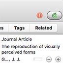

Welcome to
Glass Cast
Visualize your research
Drag and Drop
your Zotero report
into the box

Do not have a Zotero report? Create one

Download Zotero
Zotero is a powerful open access citation manager. Download it here and get familiar with it

Create a collection
You can visualize several different document databases by using individual collections. You can use Glass Cast to visualize and navigate within a single paper or an entire thesis

Annotate, tag and relate
Use Zotero tabs to categorize and connect your documents. Use
TAGS
to categorize your information consistently. Use the
RELATED
tab to generate explicit or implicit connections between the documents.

Generate a report
Right-click on your collection to generate a Zotero report. This report will contain all the data that you provided